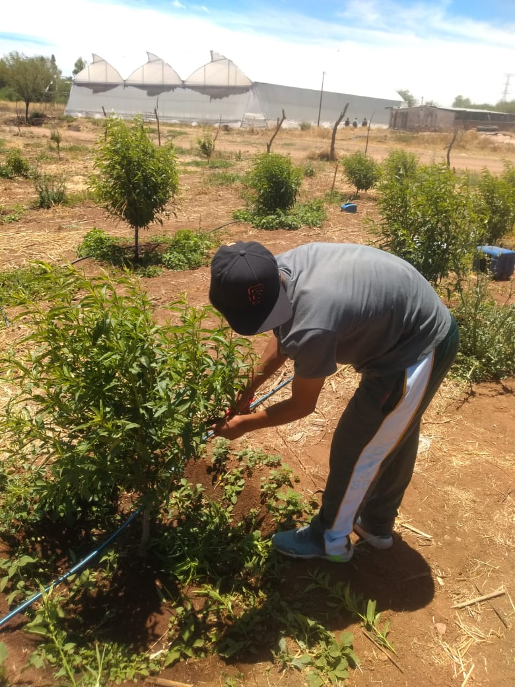

La automatización del riego es el uso de tecnologías, como sensores y sistemas electrónicos, para controlar de manera automática cuándo, dónde y cuánto regar. Esto se realiza sin intervención humana directa, ya que los sistemas están programados para actuar según las condiciones del cultivo y del entorno.
La automatización mejora la eficiencia del riego, reduce el desperdicio de agua y asegura que las plantas siempre reciban el agua necesaria, incluso en ausencia del agricultor.

⬅ Volver